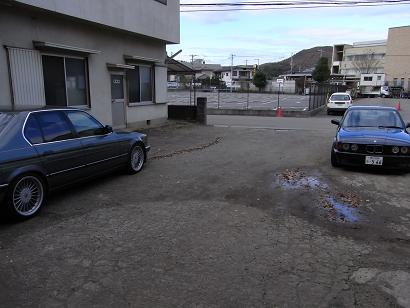 あるぴなさんの秘密基地へ到着すると・・・ ボーベンさんもいらっしゃるではありませんか＾＾！
|
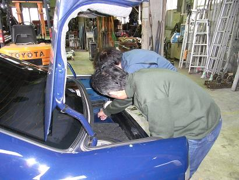 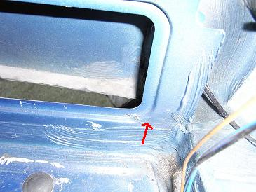 早速、基地内に車を入れて溶接箇所のチェックです。 右側テールランプの後ろにある鉄板が割れて、そこが擦れて「キュルキュル」と異音が出ていたのが発見するキッカケに＾＾； にしても、なんでこんなところ割れるんでしょう。。 機会があればみなさんのE34もチェックしてみてください。
|
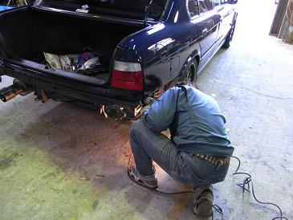 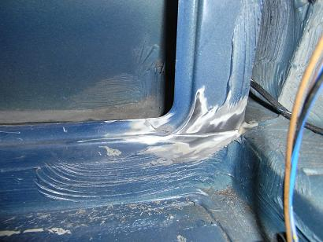 「リヤバンパーを外したほうが早いかも」ってことで、バンパーを外しての作業です。 画像は、あるぴなさんがディスクグラインダーで研磨しているところです＾＾ 亀裂が良く分かりますねぇ・・・
|
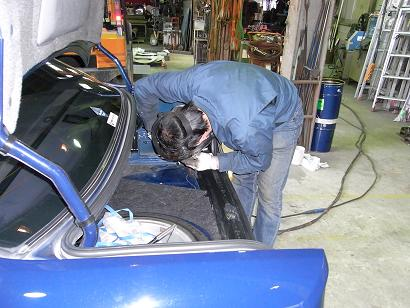 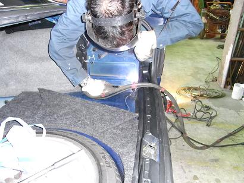 箇所が箇所だけに、、なかなか体勢がきまらず。。
|
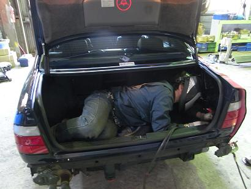 トランクに入り込んでの溶接となりました＾＾/
|
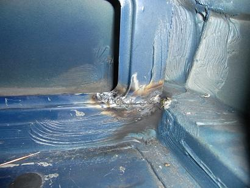 さすがはその道のプロ、綺麗に溶接されています。 あるぴなさんがお仲間にいて良かった＾＾
|
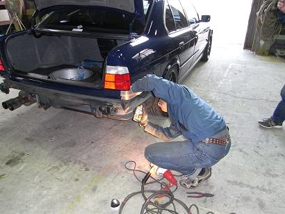 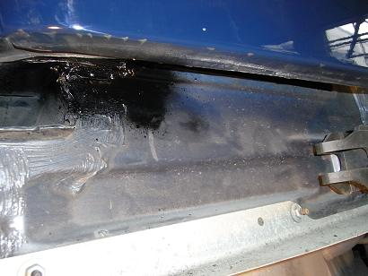 「そのままじゃ錆びるでっ」ってことで、ブラックで塗っていただきましたm(__)m え？黒でいいのかって？ 良いんです。見えない所だし（笑
|
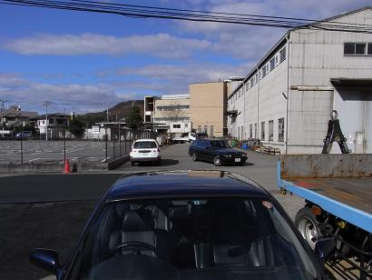 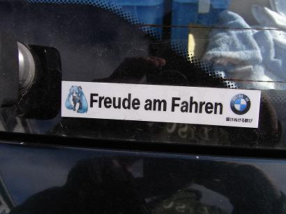 ちょうど作業が終了したところで、つばめさんが登場＾＾ つばめ号を見てると、こんなステッカーが（笑 その後、しばらくウダウダしての解散となりました。 溶接後は、当然のことながら異音が消えた。 大満足だ！ あるぴな小僧さんありがとうございました＾＾
|